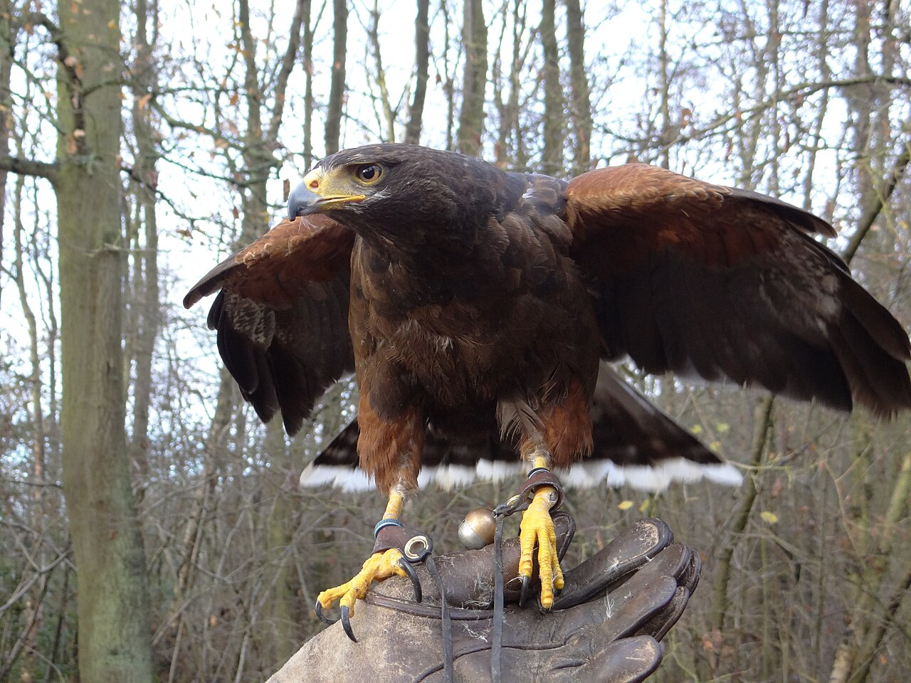

Resources → Getting Started
Legal Birds for Apprentice Falconers: Species Guide by State
Under federal regulations, apprentice falconers are generally limited to two species: the Red-tailed Hawk and the American Kestrel. Some states allow additional species or impose further restrictions. This guide covers what you can fly, why these species are recommended, and how state rules vary.
Federal Rules for Apprentice Birds
The USFWS regulations (50 CFR 21.29) establish the federal framework for falconry in the United States. For apprentice-level permit holders:
- Apprentices may possess one raptor at a time
- The bird must be a wild-caught Red-tailed Hawk (Buteo jamaicensis) or American Kestrel (Falco sparverius)
- The bird must be a passage bird (hatched that year, caught in its first fall/winter)
- Captive-bred birds are not permitted for apprentices under federal rules
- The apprentice must have a licensed General or Master falconer as a sponsor
- The apprenticeship lasts a minimum of 2 years
States can be more restrictive than federal rules but cannot be more permissive. Some states have added species to the apprentice list, while others have restricted the options further.
Red-tailed Hawk (Buteo jamaicensis)
The Red-tailed Hawk is the most common and recommended first falconry bird. There are excellent reasons for this:
- Abundant — Red-tails are the most common hawk in North America. They are easy to trap and populations are healthy.
- Tough — Red-tails are hardy birds that tolerate handling, weather extremes, and beginner mistakes better than most species.
- Forgiving — Weight management is more forgiving with red-tails than with smaller, more sensitive species. The margin of error is wider.
- Effective hunters — A well-trained passage red-tail is an excellent rabbit and squirrel hawk. They provide genuinely exciting hunting from the first season.
- Releasable — After a season of training and hunting, a passage red-tail can be released back to the wild in excellent condition, often in better physical shape than when trapped.
Red-tailed Hawk Quick Facts
| Attribute | Female | Male (Tiercel) |
|---|---|---|
| Weight range | 900–1,460 g | 690–1,300 g |
| Typical flying weight | 950–1,100 g | 750–900 g |
| Wingspan | 45–52 in | 42–48 in |
| Primary quarry | Cottontail rabbit, squirrel | |
| Temperament | Bold, adaptable, forgiving of errors | |
| Hunting style | Soar and stoop, or perch-and-wait ambush | |
American Kestrel (Falco sparverius)
The American Kestrel is the smallest falcon in North America and the other standard apprentice option. However, most experienced falconers recommend starting with a red-tail instead. Here is why:
- Challenging weight management — Kestrels weigh 100–150g. A 5-gram error represents 3–5% of body weight. This margin is dangerously narrow for beginners.
- Limited quarry — Kestrels hunt insects, mice, and small birds. The hunting experience is less dramatic than flying a hawk at rabbits.
- Fragile — Kestrels are more susceptible to stress, cold, and handling errors. They can decline quickly if mismanaged.
- Valuable learning experience — Despite the challenges, some apprentices do start with kestrels, particularly in urban settings where rabbit hawking habitat is limited.
American Kestrel Quick Facts
| Attribute | Female | Male |
|---|---|---|
| Weight range | 120–165 g | 100–140 g |
| Typical flying weight | 110–130 g | 95–115 g |
| Wingspan | 21–24 in | 20–22 in |
| Primary quarry | Insects, mice, small birds | |
| Temperament | Spirited, quick, less forgiving | |
| Hunting style | Hover-and-drop, direct pursuit | |
State-by-State Variations
While federal rules allow Red-tailed Hawks and American Kestrels for apprentices, some states have expanded or restricted the list:
States Allowing Additional Apprentice Species
- Some western states allow Harris's Hawks (Parabuteo unicinctus) for apprentices under certain conditions
- A few states permit Red-shouldered Hawks for apprentice use
- Allowances change — always verify current rules with your state wildlife agency
States with Additional Restrictions
- Some states restrict trapping to specific seasons (typically September through January)
- A few states require apprentices to start with a Red-tailed Hawk specifically (not a kestrel)
- Trapping methods vary by state — bal-chatri, bow net, and dho-gazza are common, but not all methods are legal everywhere
- Some states require the sponsor to be present during trapping
Important: Always verify current regulations with your state wildlife agency before trapping any raptor. Rules change, and the information here is for general guidance only.
Which Bird Should You Start With?
The overwhelming consensus among experienced falconers is: start with a passage Red-tailed Hawk. Here is why:
- Safety margin — The wider weight management margin means fewer emergencies and more time to learn.
- Real hunting — A red-tail hunting rabbits provides the full falconry experience: the slip, the chase, the catch, the reward.
- Transferable skills — Everything you learn managing a red-tail transfers to other species when you upgrade to General class.
- Release option — Passage red-tails are routinely released after one or two seasons. The bird returns to the wild, and you gain the option to trap a new bird or acquire a captive-bred raptor at General level.
- Sponsor preference — Most sponsors strongly prefer to train apprentices with red-tails. Some will decline to sponsor a kestrel-first apprentice.
Trapping Basics
Trapping a passage raptor requires a valid apprentice permit, sponsor supervision (in most states), and the right timing. Key points:
- Timing — Passage red-tails are trapped in fall (September–December in most states). These are birds hatched that spring/summer, now dispersing from their parents' territory.
- Trapping methods — The bal-chatri (a small cage with nooses and a bait animal inside) is the most common. The bird lands on the cage to grab the bait and gets its feet tangled in the nooses.
- Selecting a bird — Look for a healthy, alert bird with clean plumage and good body condition. Your sponsor will help you evaluate candidates.
- Legal requirements — You need your apprentice permit, a federal 3-186A form, and any state trapping permits before trapping. Your mews must be built and inspected.
- After trapping — The bird is hooded, taken home, placed in the mews, and the manning process begins. Your sponsor guides every step.
Find a Falconry Sponsor
A sponsor guides you through your first bird selection, trapping, and training. Browse verified sponsors in our directory.
Browse Sponsors